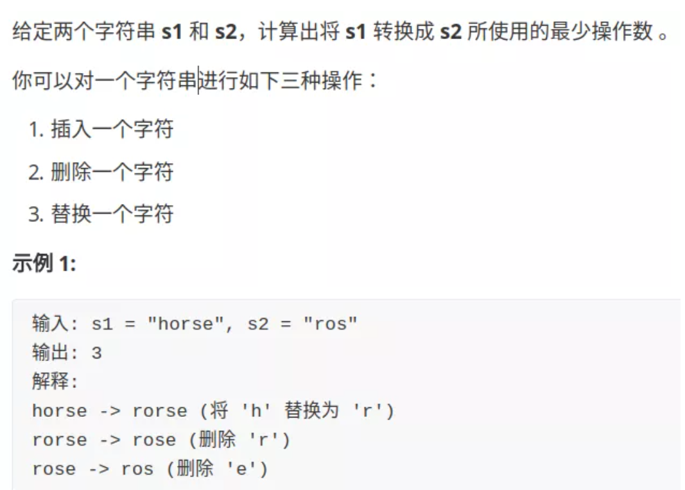
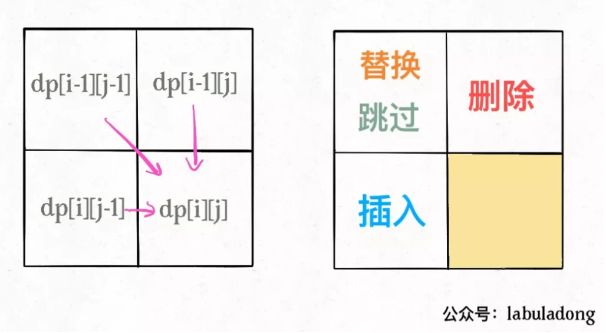
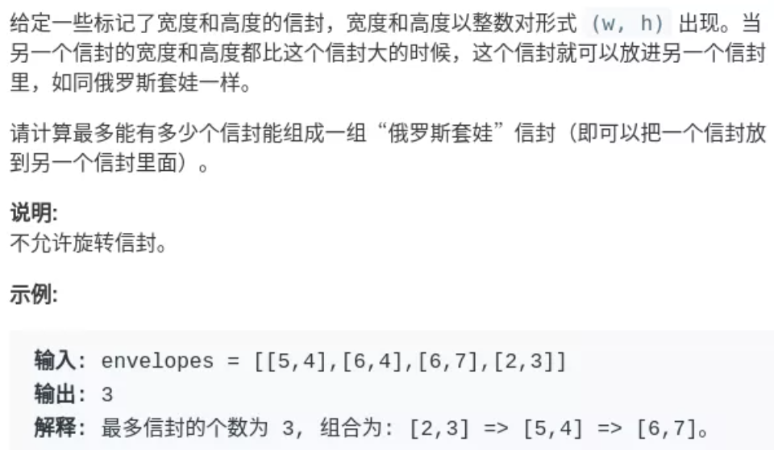
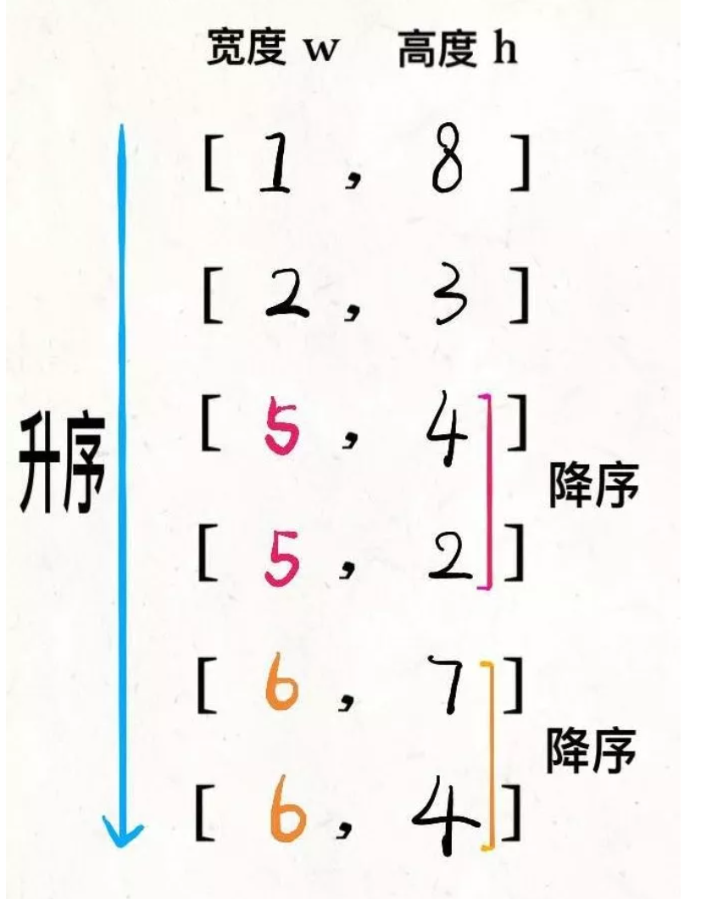
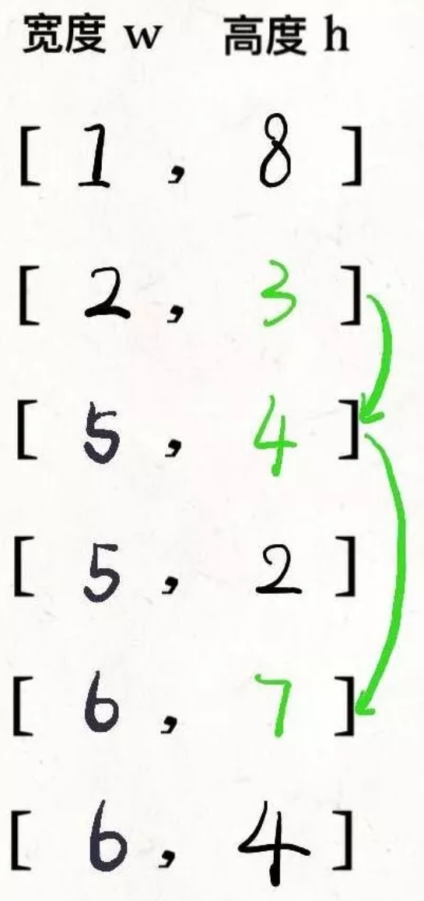

扔鸡蛋问题
题目要求, 面前有一栋从1到N共N层的楼, 给K个鸡蛋(K至少为1)。该楼存在楼层0<=F<=N，在这层楼扔下去, 鸡蛋恰好每摔碎(高于F的楼层都会碎, 低于F的楼层不会碎)。问最坏情况下，扔多少次鸡蛋，确定该楼层。
我们在第i层楼扔鸡蛋, 可能出现两种情况, 鸡蛋碎了和鸡蛋没碎。
如果鸡蛋碎了, 鸡蛋的个数K减1, 搜索楼层区间应该从[1..N]变为[1..i-1]共i-1层楼。
如果鸡蛋没碎, 鸡蛋个数K不变, 搜索楼层从[1..N]变为[i+1..N]共N-i层楼。

所以有递归写法
def dp(K, N):
for 1 <= i <= N:
# 最坏情况下的最少扔鸡蛋次数
res = min(res,
max(
dp(K - 1, i - 1), # 碎
dp(K, N - i) # 没碎
) + 1 # 在第 i 楼扔了一次
)
return res加上备忘录
def superEggDrop(K: int, N: int):
memo = dict()
def dp(K, N) -> int:
# base case
if K == 1: return N
if N == 0: return 0
# 避免重复计算
if (K, N) in memo:
return memo[(K, N)]
res = float('INF')
# 穷举所有可能的选择
for i in range(1, N + 1):
res = min(res,
max(
dp(K, N - i),
dp(K - 1, i - 1)
) + 1
)
# 记入备忘录
memo[(K, N)] = res
return res
return dp(K, N)编辑距离

解决两个字符串的动态规划问题，一般都是用两个指针i,j分别指向两个字符串的最后，然后一步步往前走，缩小问题的规模。
- 注意每一个字符串都可以进行插入, 删除, 替换操作。换言之可以按照, a删除, b替换等顺序。
一般的, 可以有如下思路
if s1[i] == s2[j]:
啥都别做（skip）
i, j 同时向前移动
else:
三选一：
插入（insert）
删除（delete）
替换（replace）def minDistance(s1, s2) -> int:
def dp(i, j):
if i == -1:
return j+1 # j+1个字符全部删除
if j == -1:
return i+1
if s[i] == s[j]:
return dp(i-1, j-1) # i, j前移, 啥也不做
else
return min(dp(i-1, j), # 删除
dp(i, j-1), # 增加一个字符
dp(i-1, j-1) # 替换字符
)
return dp(len(s1)-1, len(s2)-1)
dp(i, j - 1) + 1, # 插入
# 解释：
# 我直接在 s1[i] 插入一个和 s2[j] 一样的字符
# 那么 s2[j] 就被匹配了，前移 j，继续跟 i 对比
# 别忘了操作数加一
dp(i - 1, j) + 1, # 删除
# 解释：
# 我直接把 s[i] 这个字符删掉
# 前移 i，继续跟 j 对比
# 操作数加一
dp(i - 1, j - 1) + 1 # 替换
# 解释：
# 我直接把 s1[i] 替换成 s2[j]，这样它俩就匹配了
# 同时前移 i，j 继续对比
# 操作数加一
加备忘录
def minDistance(s1, s2) -> int:
memo = dict() # 备忘录
def dp(i, j):
if (i, j) in memo:
return memo[(i, j)]
...
if s1[i] == s2[j]:
memo[(i, j)] = ...
else:
memo[(i, j)] = ...
return memo[(i, j)]
return dp(len(s1) - 1, len(s2) - 1)dp table的自底向上
- dp[i][j] 表示两个字符串分为在i, j位置(从1开始)的最小编辑距离。i,j对应字符串位置为i-1, j-1。
- 对字符s1[i-1]和s2[j-1], 如果不等, 增加删除字符可以理解为某个字符串字符前移, 也就是对应dp[i-1][j], dp[i][j-1], 替换字符位置不变(两个都前移), 为dp[i-1][j-1]。 换言之, dp[i-1][j]+1表示从0位置到第i-1, j字符串编辑距离加一。
int minDistance(string s1, string s2) {
int m = s1.size();
int n = s2.size();
vector<vector<int>> dp(m+1, vector<int>(n+1, 0));
/// 初始条件要注意
for (int i = 0; i <=m; i++)
dp[i][0] = i;
for (int j = 0; j <= n; j++)
dp[0][j] = j;
for (int i = 1; i <= m; i++) {
for (int j = 1; j <= n; j++) {
if (s1[i-1] == s2[j-1])
dp[i][j] = dp[i-1][j-1];
else
dp[i][j] = Min(dp[i-1][j-1]+1, dp[i-1][j]+1, dp[i][j-1]+1);
}
}
return dp[m][n];
}
int Min (int a, int b, int c) {
return min(a, min(b,c));
}
可以用状态压缩使空间复杂度从O(N^2)变为O(N)
信封嵌套问题

解法
先对宽度w进行升序排序，如果遇到w相同的情况，则按照高度h降序排序。之后把所有的h作为一个数组，在这个数组上计算 LIS 的长度就是答案。

然后在h上寻找最长递增子序列：

两个字符串的删除操作
给定两个单词 word1 和 word2，找到使得 word1 和 word2 相同所需的最小步数，每步可以删除任意一个字符串中的一个字符。
输入: "sea", "eat"
输出: 2
解释: 第一步将"sea"变为"ea"，第二步将"eat"变为"ea"这个问题和编辑距离的区别是, 编辑距离两个字符串都可以进行替换,增加, 删除操作, 本问题两个字符串智能进行删除的操作
在i, j处, 字符串s1删除一个字符, 与字符串s2增加一个字符效果一致。最后都是s1[i-1]与s[j]进行比较。因此本题可以用编辑距离求解
int minDistance(string s1, string s2) {
int m = s1.size();
int n = s2.size();
vector<vector<int>> dp(m+1, vector<int>(n+1, 0));
/// 初始条件要注意
for (int i = 0; i <=m; i++)
dp[i][0] = i;
for (int j = 0; j <= n; j++)
dp[0][j] = j;
for (int i = 1; i <= m; i++) {
for (int j = 1; j <= n; j++) {
if (s1[i-1] == s2[j-1])
dp[i][j] = dp[i-1][j-1];
else
dp[i][j] = min( dp[i-1][j]+1, dp[i][j-1]+1);
}
}
return dp[m][n];
}- 另一种办法是求最长公共子序列解决
int minDistance2(string word1, string word2) {
int m = word1.size();
int n = word2.size();
vector<vector<int>> dp(m + 1, vector<int>(n + 1));
for (int i = 1; i <= m; i++) {
char c1 = word1[i - 1];
for (int j = 1; j <= n; j++) {
char c2 = word2[j - 1];
if (c1 == c2) {
dp[i][j] = dp[i - 1][j - 1] + 1;
} else {
dp[i][j] = max(dp[i - 1][j], dp[i][j - 1]);
}
}
}
int lcs = dp[m][n];
return m - lcs + n - lcs;
}背包问题
01背包
明确两点，状态和选择
01背包状态有两个，就是背包的容量和可选择的物品。
选择就是装进背包或者不装进背包。 即01两种选择。
for 状态1 in 状态1的所有取值：
for 状态2 in 状态2的所有取值：
for ...
dp[状态1][状态2][...] = 择优(选择1，选择2...)给定一组多个（$n$）物品，每种物品都有自己的重量（$w_i$）和价值（$v_i$），在限定的总重量/总容量（$C$）内，选择其中若干个（也即每种物品可以选0个或1个），设计选择方案使得物品的总价值最高。
$max \sum_{i=1}^n x_iv_i$
s.t $\sum_{i=1}^n x_iw_i \leq C$
$ x_i \in {0, 1} $
定义子问题, $P(i, W)$, 在前i个物品中挑选总重量不超过$W$(背包剩余容量为W)的物品, 每种物品至多选一个, 使总价值最大。这时的最优解记作$m(i, W)$
则
$m(i, W) = max{m(i-1, W), m(i-1, W-w_i) + v_i} $
综合边界条件
$i=0, m(i, W)=0$
$w=0, m(i, W)=0$
$w_i>W, m(i, W) = m(i-1, W)$
$otherwise, m(i, W) = max{m(i-1, W), m(i-1, W-w_i) + v_i}$
举例
N = 3 //地主家有三样东西
wt = [2,1,3] //每样东西的重量
val = [4,2,3] //每样东西的价值
W = 4 //背包可装载重量
def kpack(N:int, wt:List[int], val:List[int], W:int) -> int:
size = len(wt)
m = [[0 for i in range(W + 1)] for j in range(N + 1)]
#i 为选择的物品, j为剩余容量
for i in range(1, N+1):
for j in range(1, W+1):
if wt[i-1] > j:
m[i][j] = m[i-1][j]
else:
m[i][j] = max(m[i-1][j], m[i-1] [j-wt[i-1]]+val[i-1])
print (m)
return m[N][W]完全背包
与0-1背包问题不同的地方时，完全背包问题允许一件物品无限次的出现。
dp[i][w] = max(dp[i - 1][w], dp[i - 1][w - w[i]] + v[i]); //01背包问题的递推方程式
dp[i][w] = max(dp[i - 1][w], dp[i - 1][w - k * w[i]] + K * v[i]); //完全背包问题的递推方程式
//dp[i][w] 代表前i件物品放入质量为w的背包时的最大价值。
//k 代表着第i件物品拿了几件，咱们枚举一下自然就知道几件的时候可以使得价值最大，这个就是扩展01背包问题的关键地方
for(int i = 1; i <= N; i++){
for(int j = 1; j <= W; j++){
for(int k = 1; j - k*w[i] >= 0; k++){ //防止越界, 容量足够
dp[i][j] = max(dp[i - 1][j], dp[i - 1][j - k * w[i]] + k * v[i]); //完全背包问题的递推方程式
//dp[i][w] 代表前i件物品放入质量为w的背包时的最大价值。
//k 代表着第i件物品拿了几件，咱们枚举一下自然就知道几件的时候可以使得价值最大，这个就是扩展01背包问题的关键地方
}
}
完全背包问题还有一个简单又有效的优化，那就是如果 w[a] > w[b] && v[a] < v[b] 这种情况下就可以a物品去掉，因为有b就没必要去选a了，因为a比b重而且a的价值比b还小
完全背包递推
for(int i = 1; i <= N; i++){
for(int j = 1; j <= W; j++){
if(j < W[i]) dp[i][j] = dp[i-1][j];
else dp[i][j] = max(dp[i - 1][j], dp[i][j - w[i]] + v[i]);
}
}等和子集
相当于从数组选取数字, 将背包装满。
dp[i][j] 表示从数组的 [0,i]下标范围内选取第i个数字（可以是 0 个），是否存在一种选取方案使得被选取的正整数的和等于 j。
如果 j>=nums[i]，则对于当前的数字 nums[i]，可以选取也可以不选取，两种情况只要有一个为 true，就有 dp[i][j]=true。
选取如果不选取 nums[i]，则 dp[i][j]=dp[i−1][j]；
如果选取 dp[i][j]=dp[i−1][j−nums[i]]。
dp[i][j] = dp[i−1][j−nums[i]] | dp[i−1][j]
表示选取或者不选取
如果 j<nums[i]，则在选取的数字的和等于 j 的情况下无法选取当前的数字 nums[i]，因此有 dp[i][j]=dp[i−1][j]。
bool canPartition(vector<int>& nums) {
int sum = 0;
for (int num : nums) sum += num;
// 和为奇数时，不可能划分成两个和相等的集合
if (sum % 2 != 0) return false;
int n = nums.size();
sum = sum / 2;
vector<vector<bool>>
dp(n + 1, vector<bool>(sum + 1, false));
// base case
// 背包没有空间的时候，就相当于装满了，
for (int i = 0; i <= n; i++)
dp[i][0] = true;
for (int i = 1; i <= n; i++) {
for (int j = 1; j <= sum; j++) {
if (j - nums[i - 1] < 0) {
// 背包容量不足，不能装入第 i 个物品
dp[i][j] = dp[i - 1][j];
} else {
// 装入或不装入背包
dp[i][j] = dp[i - 1][j] | dp[i - 1][j-nums[i-1]];
}
}
}
return dp[n][sum];
}